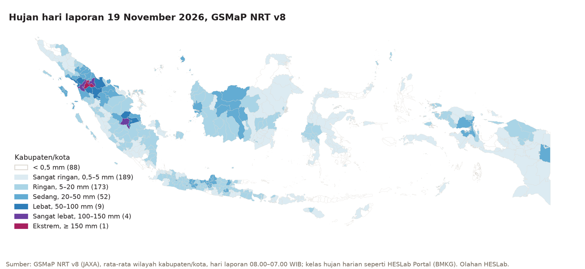
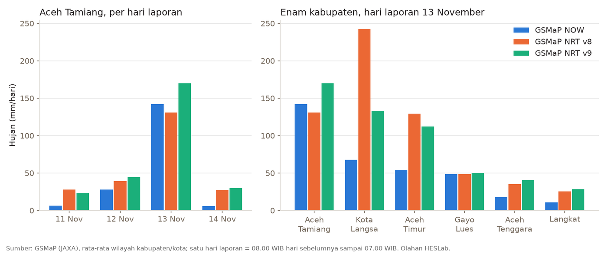
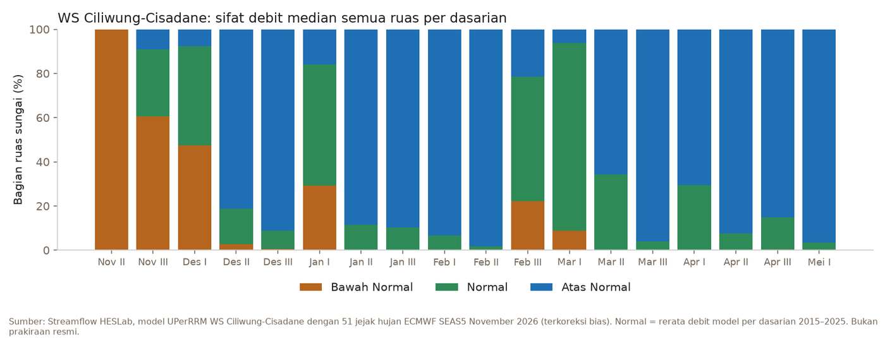
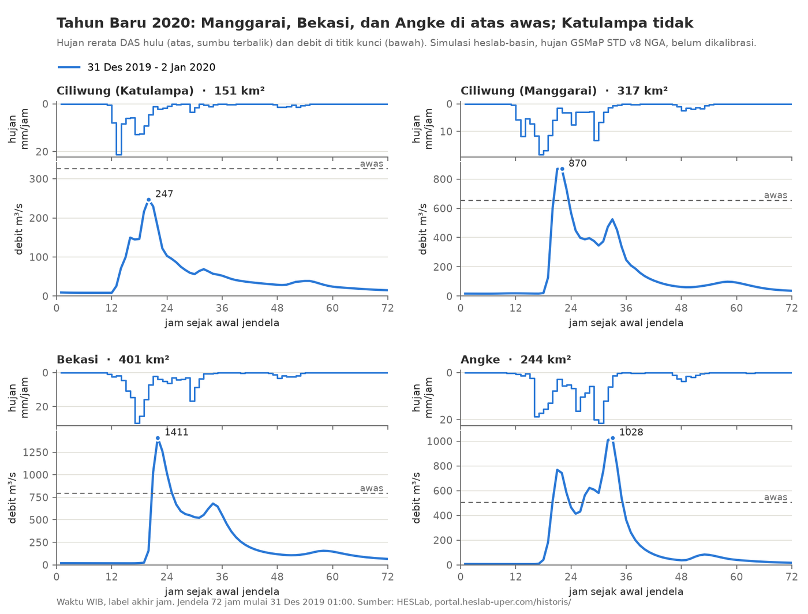
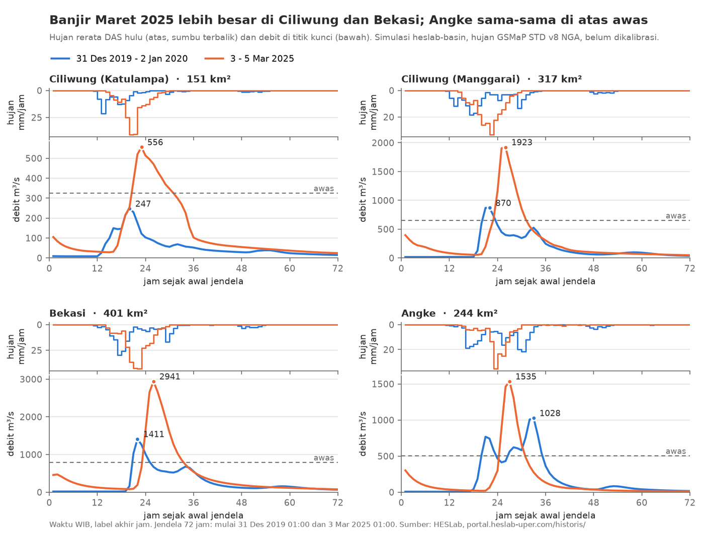
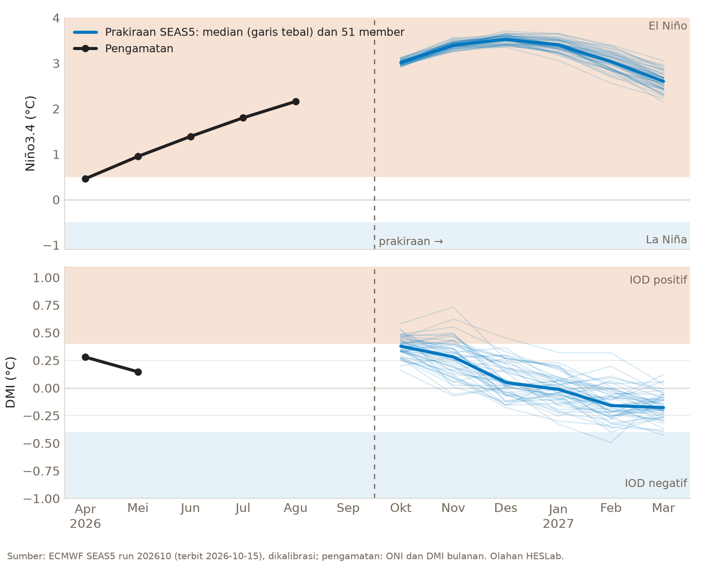

Artikel
Tulisan HESLab tentang data hujan satelit, pemodelan hidrologi, dan pengolahan data.
Langganan RSS: tempel alamat
https://heslab-uper.com/feed.xml
di aplikasi pembaca RSS (mis. Feedly, Inoreader); artikel baru akan muncul di sana.
Belum ada artikel untuk topik ini.
November 2026
 Metode & data
Metode & data
Survei hidrometri Sungai Angke dan Sungai Bekasi, 15 November 2026: debit terukur dan perkiraan kapasitas tanggul
Tim HESLab mengukur debit Sungai Angke (3,9 m³/dt) dan Sungai Bekasi (16,8 m³/dt) pada 15 November 2026. Dari pengukuran ini disusun perkiraan awal kapasitas penuh tanggul: sekitar 100 m³/dt di Angke dan 900–1.000 m³/dt di Bekasi.
Baca → Kejadian banjir
Kejadian banjir
Banjir Kota Bengkulu, 17 November 2026: hujan semalam suntuk, bukan satu hujan ekstrem
Banjir merendam enam kecamatan Kota Bengkulu pada Selasa 17 November 2026. Menurut GSMaP, hujan Senin malam sampai Selasa siang berjumlah 40 sampai 78 mm, turun tanpa jeda lebih dari 15 jam dan ditutup hujan deras pada pagi hari. Hujan terlebat malam itu jatuh di pedalaman utara, di perbatasan Lebong dan Bengkulu Utara.
Baca →
Hujan harianHujan harian Indonesia, 19 November 2026: hujan lebat dini hari di Sumatera bagian tengah, produk satelit tidak sepakat
Menurut GSMaP NRT, 14 kabupaten/kota di Sumatera Utara, Jambi, dan Riau mendapat hujan lebih dari 50 mm pada malam 18–19 November 2026, hampir seluruhnya dalam tiga jam dini hari. GSMaP NOW hampir tidak mencatat hujan itu. Kota Jambi diguyur hujan lebat sejak dini hari, tetapi titik langganan banjir di Kenali tetap kering.
Baca → Kejadian banjir
Kejadian banjir
Hujan dan banjir di Kota Pontianak 2014-2026: apa yang terbaca satelit dan pos hujan
Tujuh banjir Pontianak dibaca dengan arsip GSMaP sejak 1998. Pada tiga banjir yang punya angka pos, hujannya 101 sampai 154 mm sehari, di atas 80 mm yang menurut BMKG sering memicu banjir. Satelit menangkap waktu hujan dengan baik, tetapi sering mencatat besarnya jauh lebih kecil, dan pasang Kapuas ikut memperparah sedikitnya dua banjir.
Baca → Hujan harian
Hujan harian
Hujan harian Indonesia, 17 November 2026: lebat di Sumatera bagian barat, Banjarmasin dan Jawa Timur
Menurut GSMaP NRT v8, 17 kabupaten/kota mendapat hujan sedikitnya 50 mm, terbesar Kota Banjarmasin 153 mm. Produk satelit tidak sepakat soal besarnya, dan banjir yang diberitakan hari itu terjadi di Bengkulu dan Melawi.
Baca → Kejadian banjir
Kejadian banjir
Banjir Cipageran dan Kertasari, 17–18 November 2026: hujan sore sedang di Bandung Raya, produk satelit bertentangan di Purwakarta
Dua sore berturut-turut rumah di Cipageran, Cimahi Utara, kebanjiran, dan Rabu sore banjir lumpur menutup jalan di Kertasari. Menurut GSMaP, hujan di lokasi-lokasi itu sekitar 5 sampai 40 mm dalam empat jam. Hujan sangat lebat di Purwakarta hanya dilihat satu produk tiap sore, dan peringatan FEWS Citarum di sana pada Rabu petang tidak didukung NRT.
Baca → Kejadian banjir
Kejadian banjir
Tanggul Cikalintu jebol, Bandung 16 November 2026: hujan sore di Cipaganti tidak lebat menurut satelit
Senin sore 16 November tanggul Sungai Cikalintu di Cipaganti, Bandung, jebol lagi. Menurut GSMaP NOW, NRT v8, dan NRT v9, hujan sore itu di piksel Cipaganti hanya sekitar 2 sampai 10 mm, sedangkan hujan lebat jatuh di Kabupaten Bandung bagian selatan.
Baca → Kejadian banjir
Kejadian banjir
Banjir Kerinci dan Sungai Penuh 16-17 November 2026: hujan panjang semalam menurut satelit
Tanggul Batang Merao jebol pada 16 November. Menurut GSMaP NRT, hujan turun hampir tanpa henti dari Senin malam sampai Selasa subuh, sekitar 50 sampai 60 mm sehari di Kerinci dan Sungai Penuh. Tidak luar biasa untuk ukuran setahun, tetapi lebih besar daripada hujan menjelang tiga banjir Batang Merao sebelumnya.
Baca → Kejadian banjir
Kejadian banjir
Hujan siang 17 November 2026 di Tangerang: genangan dan pohon tumbang menurut berita dan satelit
Selasa siang 17 November Jalan MH Thamrin di Kota Tangerang tergenang dan pohon tumbang di sejumlah titik. Menurut GSMaP NRT, hujan turun serentak pukul 13.00 sampai 14.00 WIB di Tangerang dan Jakarta bagian barat, sekitar 8 mm dalam jam itu di Kota Tangerang. NRT v9 mencatat inti hujan sangat deras di Kabupaten Tangerang yang tidak terlihat di NRT v8.
Baca → Kejadian banjir
Kejadian banjir
Napak tilas banjir WS Ciliwung-Cisadane 2015–2026: model dan berita
Dari 36 kejadian banjir terbesar menurut simulasi ulang debit 2015–2026, 16 cocok dengan berita, 8 sebagian, dan 12 tidak ditemukan beritanya. Kejadian terbesar: Maret 2025 dan 6 Juli 2024 di musim kemarau.
Baca → Kejadian banjir
Kejadian banjir
Banjir Medan 28 Oktober dan 5 November 2026: dua banjir, satelit hanya melihat satu
Hujan pagi 5 November, sekitar 70 sampai 90 mm sehari di Kota Medan, tercatat jelas oleh GSMaP NOW, NRT v8, dan NRT v9. Hujan penyebab banjir 28 Oktober yang merendam 2.200 rumah hampir tidak terlihat satelit.
Baca → Kejadian banjir
Kejadian banjir
Banjir dan longsor Tasikmalaya 14 November 2026: hujan semalam di selatan menurut satelit
Hujan lebat turun sejak lewat tengah malam sampai pagi 14 November, sekitar 65 sampai 100 mm di Kabupaten Tasikmalaya menurut GSMaP NRT dan Standard, dan lebih dari 150 mm di beberapa piksel di selatan. GSMaP NOW mencatatnya beberapa jam lebih lambat.
Baca →
Kejadian banjirBanjir Aceh Tamiang 13 November 2026: hujan satu malam menurut satelit
Hujan terlebat turun malam 12 November. Lima produk GSMaP sepakat soal waktunya, tetapi hujan sehari di Aceh Tamiang berkisar 89 sampai 170 mm. Sejak 2015, hujan ini terbesar kedua menurut NRT v8, tetapi biasa saja menurut Standard v8.
Baca →
Prakiraan debitPrakiraan debit Ciliwung-Cisadane: kering sampai awal Desember, lalu berbalik
Setelah November yang sangat kering, semua ruas sungai WS Ciliwung-Cisadane Bawah Normal pada Nov II. Menurut 51 jejak SEAS5, lebih dari 80 % ruas berbalik Atas Normal mulai Des II; Cisadane paling lambat pulih.
Baca →
Kejadian banjirNapak tilas banjir Tahun Baru 2020 di Ciliwung, Bekasi, dan Angke
Banjir 1 Januari 2020 ditelusuri ulang dengan berita, catatan pintu air, dan simulasi hujan-debit per jam HESLab untuk WS Ciliwung-Cisadane: Angke paling merata terdampak, Ciliwung hulu tetap di bawah awas.
Baca → Kejadian banjir
Kejadian banjir
Napak tilas banjir Maret 2025 di Ciliwung, Bekasi, dan Angke
Banjir 3-4 Maret 2025 ditelusuri ulang dengan berita, catatan BMKG dan BPBD, serta simulasi HESLab: Bekasi dan Ciliwung mencatat hujan dan debit model tertinggi dalam 2015-2025.
Baca →
Kejadian banjirBanjir 2020 dan 2025: wilayah mana yang lebih parah
Hujan 2020 lebih luas, hujan 2025 lebih deras di hulu. Perbandingan hujan, hidrograf, dan lama di atas awas untuk Ciliwung, Bekasi, Angke, dan Cisadane.
Baca → Iklim & ENSO
Iklim & ENSO
El Niño mendekati puncak, IOD menuju netral: hujan meluas di Sumatera, Jawa masih tertinggal
Kajian HESLab atas ECMWF SEAS5 run November 2026: Niño3.4, DMI, dan anomali suhu muka laut sampai April 2027, dibaca bersama hujan satelit GSMaP dasarian III Oktober, saat hujan meluas di Sumatera sementara Jawa, Bali, dan Sulawesi masih jauh di bawah normal.
Baca →Oktober 2026

Iklim & ENSOEl Niño menguat, IOD menuju netral: kebakaran berlanjut, hujan mulai di barat
Prakiraan ECMWF SEAS5 Oktober 2026 untuk Niño3.4 dan DMI dibaca bersama data hujan satelit GSMaP: mengapa kebakaran masih berlanjut di Sumatera bagian selatan dan Kalimantan, sementara hujan mulai turun di Sumatera bagian utara dan Kalimantan Barat.
Baca → Metode & data
Metode & data
Survei debit sesaat untuk kalibrasi model banjir
Cara tim HESLab mengukur debit sungai secara langsung dan mengapa data ini penting untuk mengkalibrasi model hujan-limpasan peringatan dini banjir JABODETABEK.
Baca →